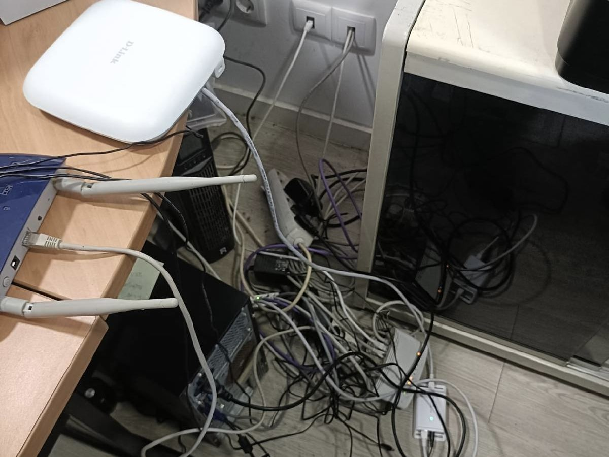
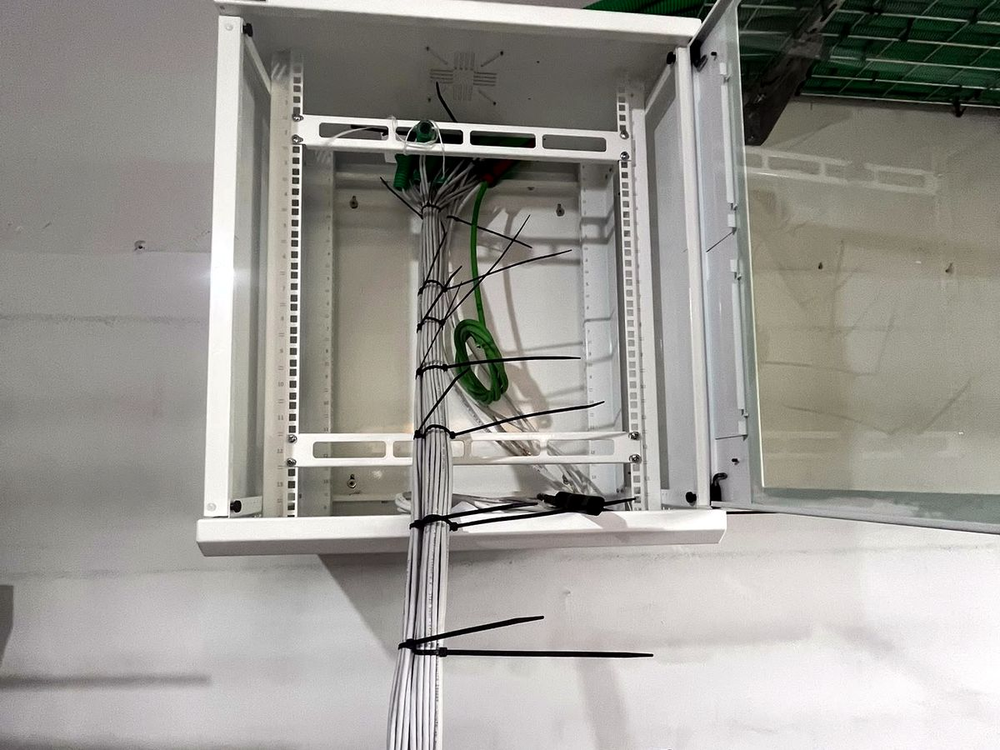
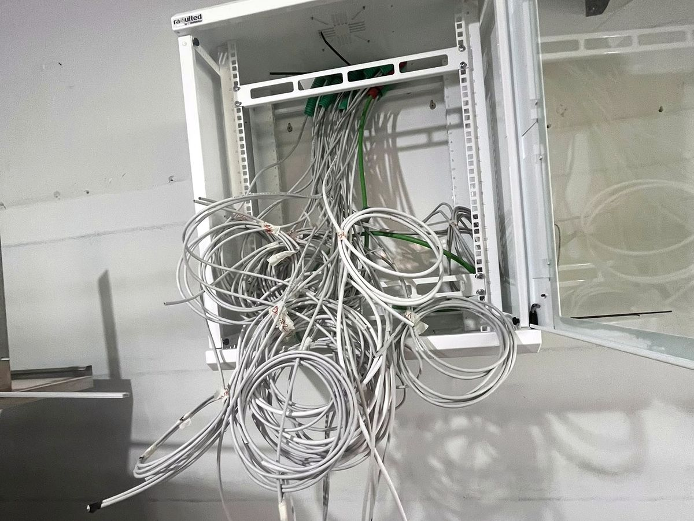
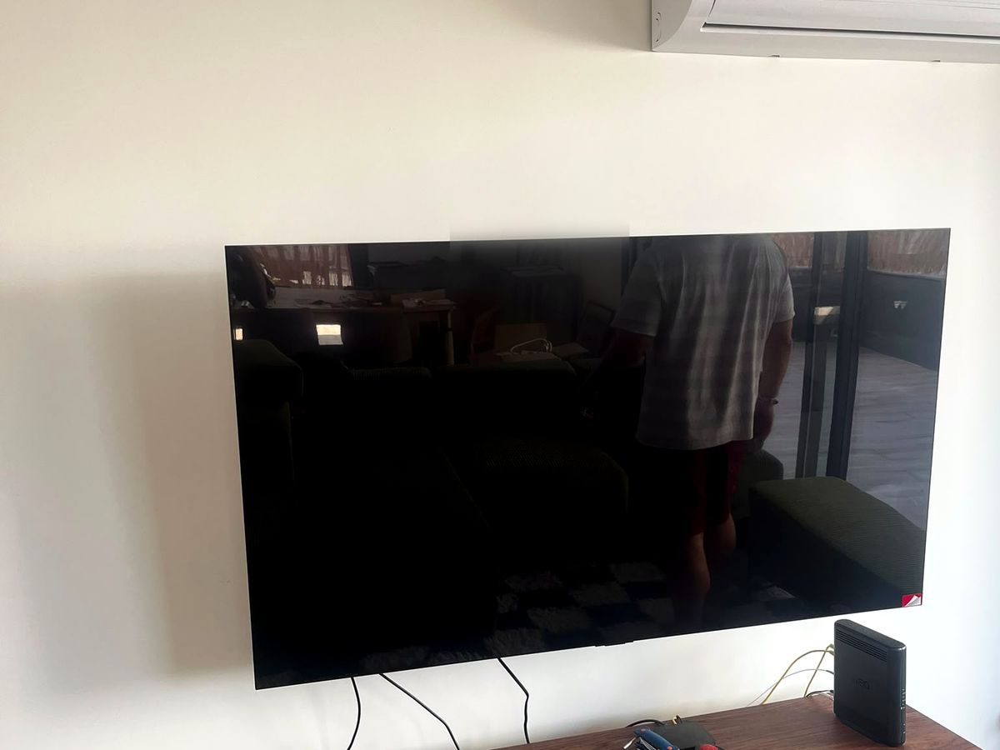
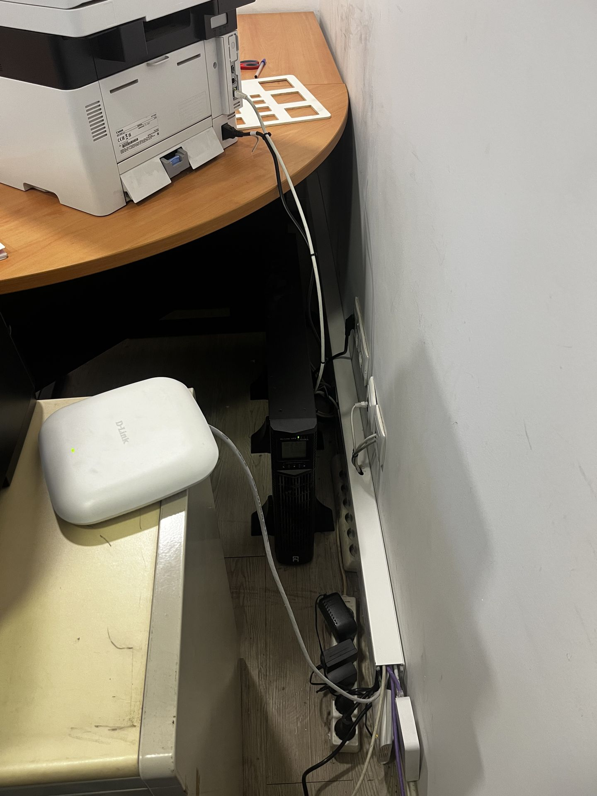

Telecom & redes
que se aguentam
CCTV, rede estruturada, Wi-Fi que chega a toda a casa, fibra, alarmes e controlo de acessos. Instalado com método e entregue com relatório de testes.
A maior parte dos problemas de rede não é o operador — é a instalação. Cabo mal crimpado, tudo a passar por Wi-Fi, switches escondidos numa gaveta. A Dizarro organiza a infraestrutura para deixar de pensar nela.
O que fazemos
- Videovigilância (CCTV) com gravação local e acesso remoto seguro
- Rede estruturada Cat 6 / Cat 6A com bastidor e patch panel
- Wi-Fi por zonas (pontos de acesso), fim das zonas mortas
- Instalação e fusão de fibra ótica
- Alarmes, deteção de perímetro e sirenes
- Controlo de acessos e videoporteiro IP (atende no telemóvel)
- Certificação ITED / ITUR para habitação nova ou remodelada
Como trabalhamos
Levantamento dos pontos, passagem de cabo (novo ou aproveitando calhas), certificação com equipamento próprio, e um esquema simples de "o que está ligado a quê". Sem pontas soltas.
Exemplo real
Escritório no Porto: 24 tomadas Cat 6A certificadas, bastidor organizado, 6 câmaras IP com 14 dias de gravação e Wi-Fi por zona — operacional numa semana.
Antes & depois — obra real
Reorganização de rede num escritório: da confusão de cabos e routers empilhados a ponto de acesso montado e cablagem em calha, com UPS.





